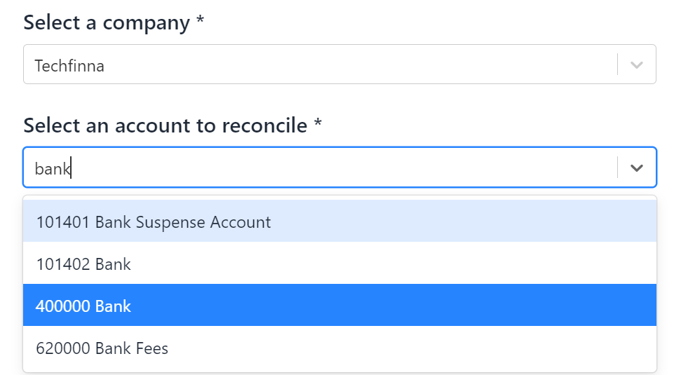
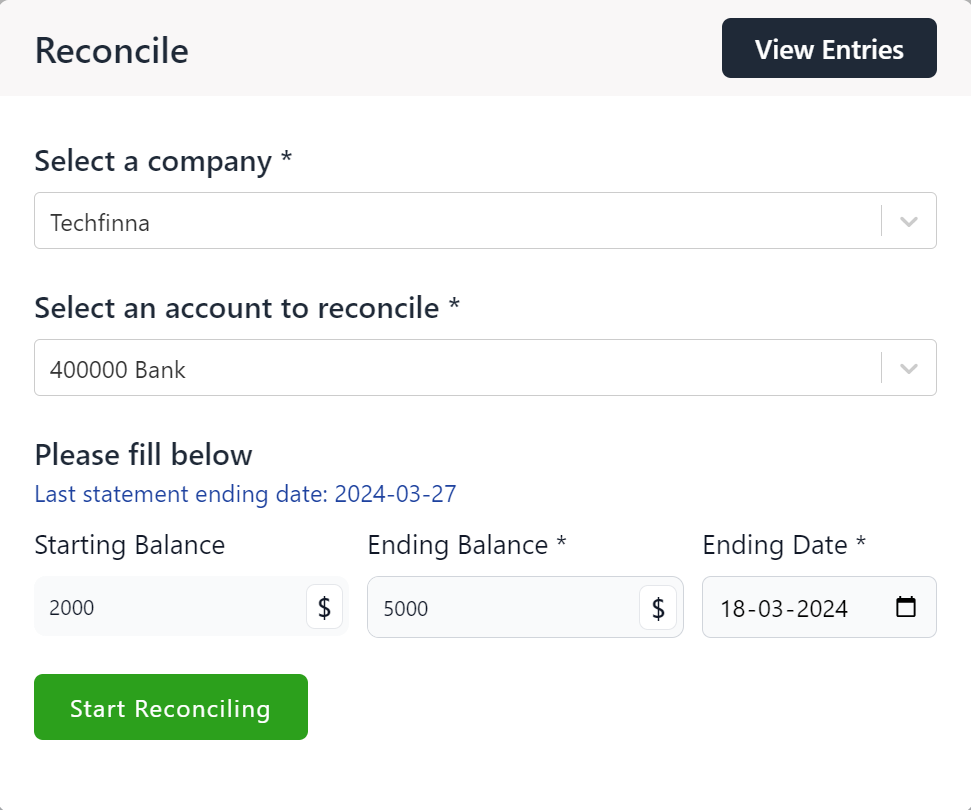
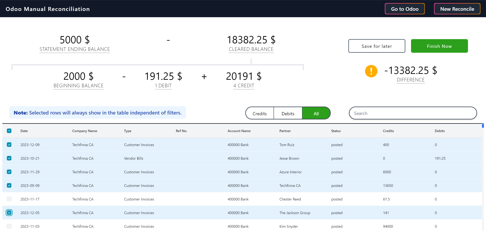
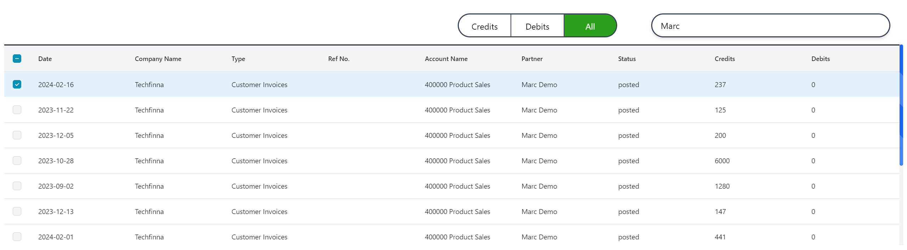
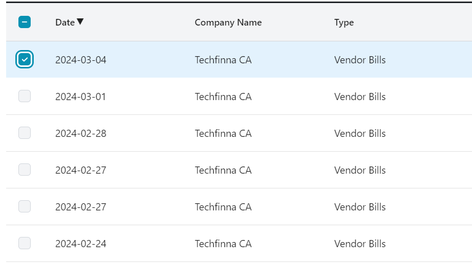
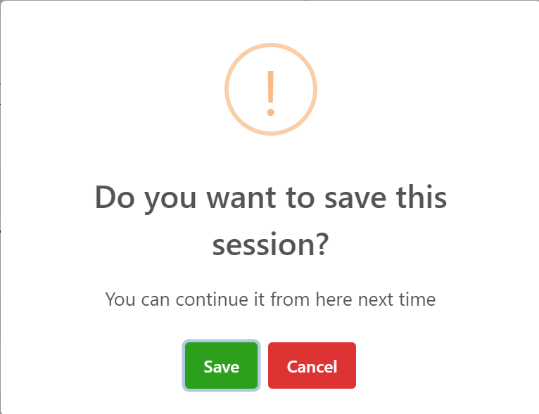
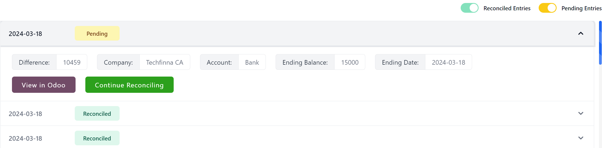
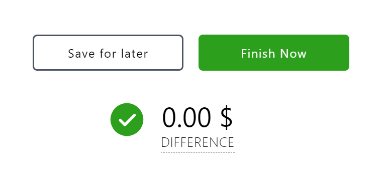
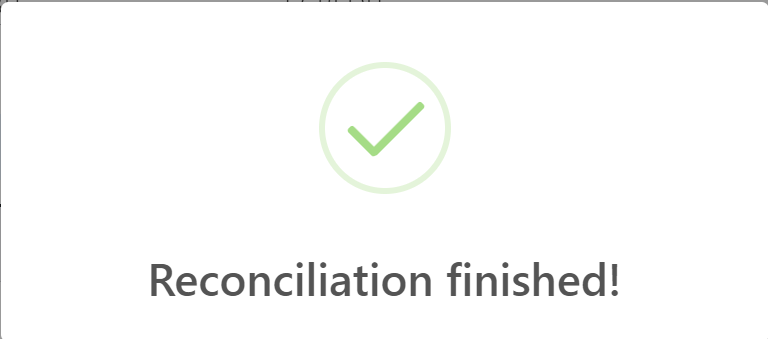
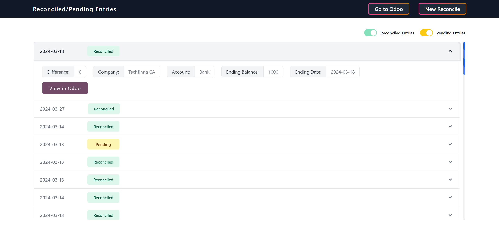

Details and usage:
Hashmicro interface sets us apart, offering a user-friendly and efficient reconciliation experience unmatched by Hashmicro's native options.
This is the most requested feature by Accountants
🔹 Easily select company and its accounts.
Very easy to select company and accounts thanks to inbuilt search functionality

🔹 Select Opening and closing balance and date till you want to reconcile.

🔹 Manually checkmark the entries that match.
Highlighted selections makes it easy to keep track.

🔹 Use filters and search to easily find invoices.
Find any invoice with filters and global search.

🔹 Sort by columns of the tables.
Quick sort by date, ref no, credits & debits.

🔹 Save session and continue your reconciliation later from where you left.
Too much invoices to check? Just click on save for now and continue it from here next time.

🔹 Continue unfinished reconciliation from pending entries.
Click on continue to reconicle to finish pending entries anytime you want.

🔹 The difference will become ZERO when transactions match for the period.

🔹 Finish to reconcile.

🔹 Get reports in module and Hashmicro.
Get finished and pending entries. Click on View in Hashmicro to show detailed report in Hashmicro.
